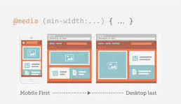
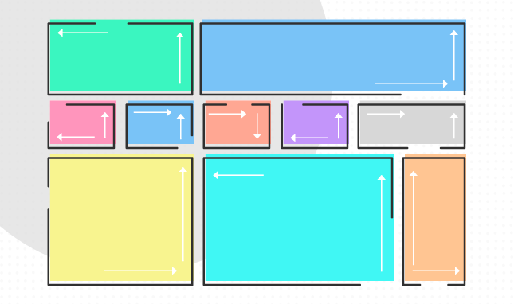
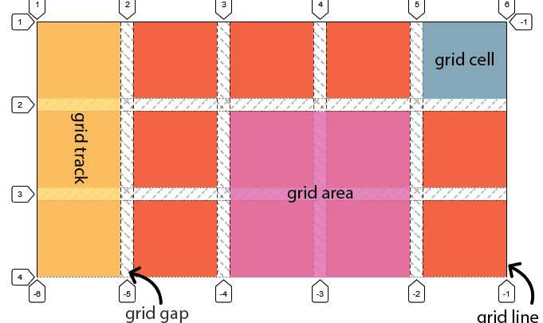

Évolutions et propriétes marquantes du CSS
CSS - Medias queries
Les médias queries est une recommandation officielle adaptée au W3C. Ce module de média queries CSS3 propose un rendu de page...
En savoir plusLes médias queries est une recommandation officielle adaptée au W3C. Ce module de média queries CSS3 propose un rendu de page web adaptable en fonction de plusieurs facteurs tels que la résolution ou la taille de l’écran. Ces requêtes multimédias sont une des techniques de base utilisées dans la conception des sites responsive.
CSS - Flexbox Layout
Dans les feuilles de style en cascade , la disposition de la grille CSS crée des dispositions de conception Web réactives complexes...
En savoir plusMedia queries est un module CSS3 permettant d'adapter le contenu d'une page web aux caractéristiques de l'appareil de l'utilisateur. De telles adaptations sont devenues une norme W3C recommandée en juin 2012. Il s'agit de la pierre angulaire des sites web adaptatifs Media queries est un module CSS3 permettant d'adapter le contenu d'une page web aux caractéristiques de l'appareil de l'utilisateur. De telles adaptations sont devenues une norme W3C recommandée en juin 2012. Il s'agit de la pierre angulaire des sites web adaptatifs Media queries est un module CSS3 permettant d'adapter le contenu d'une page web aux caractéristiques de l'appareil de l'utilisateur. De telles adaptations sont devenues une norme W3C recommandée en juin 2012. Il s'agit de la pierre angulaire des sites web adaptatifs Media queries est un module CSS3 permettant d'adapter le contenu d'une page web aux caractéristiques de l'appareil de l'utilisateur. De telles adaptations sont devenues une norme W3C recommandée en juin 2012. Il s'agit de la pierre angulaire des sites web adaptatifs
CSS - Grid Layout
CSS Grid Layout (alias «Grid») est un système de mise en page bidimensionnel basé sur une grille qui vise à ne rien faire de moins...
En savoir plusMedia queries est un module CSS3 permettant d'adapter le contenu d'une page web aux caractéristiques de l'appareil de l'utilisateur. De telles adaptations sont devenues une norme W3C recommandée en juin 2012. Il s'agit de la pierre angulaire des sites web adaptatifs Media queries est un module CSS3 permettant d'adapter le contenu d'une page web aux caractéristiques de l'appareil de l'utilisateur. De telles adaptations sont devenues une norme W3C recommandée en juin 2012. Il s'agit de la pierre angulaire des sites web adaptatifs Media queries est un module CSS3 permettant d'adapter le contenu d'une page web aux caractéristiques de l'appareil de l'utilisateur. De telles adaptations sont devenues une norme W3C recommandée en juin 2012. Il s'agit de la pierre angulaire des sites web adaptatifs Media queries est un module CSS3 permettant d'adapter le contenu d'une page web aux caractéristiques de l'appareil de l'utilisateur. De telles adaptations sont devenues une norme W3C recommandée en juin 2012. Il s'agit de la pierre angulaire des sites web adaptatifs
CSS - Object-fit property

Object-fit définit comment doit être coupé ou redimensionné un élément par rapport aux dimensions qui lui sont imposées...
En savoir plusLes médias queries est une recommandation officielle adaptée au W3C. Ce module de média queries CSS3 propose un rendu de page web adaptable en fonction de plusieurs facteurs tels que la résolution ou la taille de l’écran. Ces requêtes multimédias sont une des techniques de base utilisées dans la conception des sites responsive.